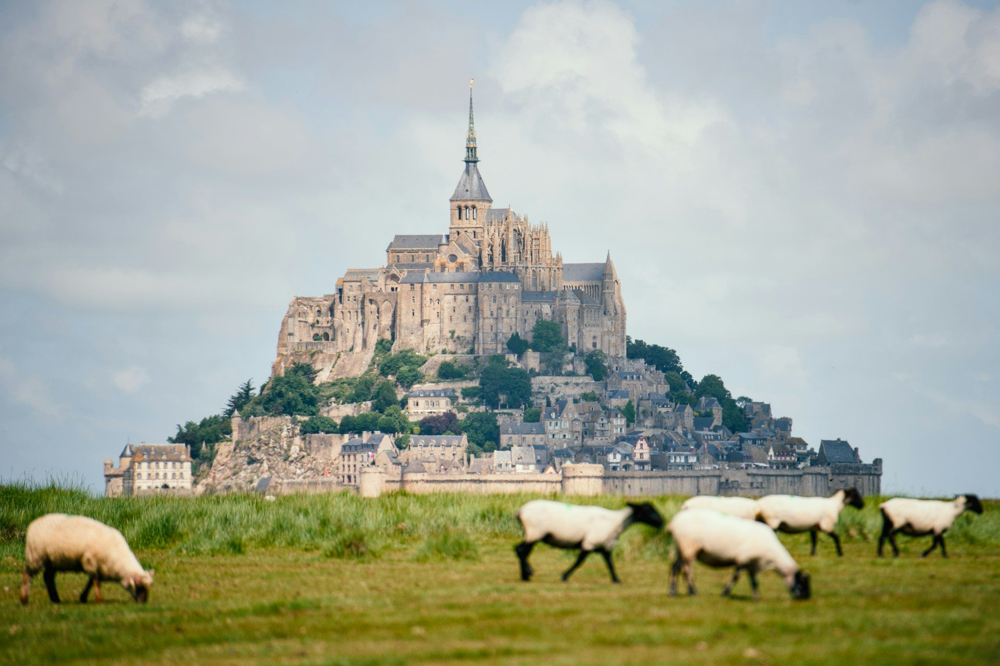

Où partir en France en 2027 ? Nos idées mois par mois
Du Rallye Monte-Carlo en janvier aux marchés de Noël d’Alsace en décembre : une destination et un rendez-vous pour chaque mois de 2027.
Photo : Andrej A / Unsplash
Pour bien choisir ses vacances en France en 2027, le plus simple est de partir de la saison. Voici, mois par mois, les destinations et les événements que nous conseillons, avec les dates déjà annoncées pour 2027. Chaque titre renvoie vers notre guide détaillé.
Où partir en France en 2027, mois par mois
Janvier : Le Rallye Monte-Carlo
La 95e édition se court du 21 au 24 janvier 2027, avec l’arrivée sur le port Hercule de Monaco. Une bonne occasion de voir la Côte d’Azur sans la foule de l’été.
Février : Le Carnaval de Nice et la Fête du Citron
Le Carnaval de Nice a lieu du 9 au 28 février 2027 et la Fête du Citron de Menton du 13 au 28 février 2027 : deux grands rendez-vous à une demi-heure l’un de l’autre. C’est aussi le mois des vacances au ski.
Avril : Giverny et les jardins de Monet
Les jardins de Monet rouvrent chaque printemps, début avril, et sont fermés en hiver. Avril et mai, avec les tulipes puis les glycines, sont les plus beaux mois pour y aller depuis Paris.
Mai : Les châteaux de la Loire
Avant la foule de l’été, mai est idéal pour Chenonceau, Chambord, Villandry et ses jardins, à vélo ou en voiture, avec les longs week-ends de l’Ascension et de la Pentecôte.
Juin : L’Armada de Rouen
Du 17 au 27 juin 2027, la 9e Armada réunit de grands voiliers venus du monde entier sur les quais de Seine. L’entrée est libre et c’est l’un des grands événements de 2027.
Juillet : La lavande en Provence
La lavande fleurit en général de fin juin à mi-juillet autour de Gordes, de l’abbaye de Sénanque et du plateau de Valensole. Venez tôt le matin pour la lumière et le calme.
Août : Le Festival interceltique de Lorient et la Bretagne
Le Festival interceltique de Lorient est annoncé du 30 juillet au 8 août 2027. Profitez-en pour Belle-Île, le golfe du Morbihan et Carnac, tout proches.
Septembre : La Corse
La mer est encore chaude, les randonnées redeviennent agréables et les prix baissent après le 15 août : septembre est le meilleur mois pour la Corse, de Bonifacio au cap Corse.
Octobre : La Dordogne et le Périgord
Les couleurs d’automne sur la vallée de la Dordogne, les marchés de Sarlat et les châteaux de Beynac et de Castelnaud, sans les embouteillages de l’été.
Décembre : Les marchés de Noël d’Alsace
Strasbourg, Colmar, Riquewihr, Kaysersberg et Eguisheim : l’Alsace reste la destination de Noël la plus recherchée de France.
Nos conseils pour réserver
- Réservez tôt pour les grands événements : les hôtels de Nice, Menton et Rouen se remplissent des mois à l’avance pour le Carnaval, la Fête du Citron et l’Armada.
- Préférez les ailes de saison : mai, juin et septembre offrent le beau temps sans la foule ni les prix de juillet-août.
- Combinez les régions proches : la Côte d’Azur et la Provence, la Normandie et la Bretagne, ou le Pays basque et les Pyrénées se visitent facilement dans le même séjour.
Dates relevées en novembre 2026 auprès des organisateurs ; elles peuvent encore changer, vérifiez avant de réserver.
Les rendez-vous à ne pas manquer


Activités à réserver
Quelques activités à réserver dès maintenant pour les grands rendez-vous de 2027.
-
Visites guidées de Nice
Le Vieux Nice, la colline du Château et la promenade des Anglais à pied.
-
Excursions à Giverny
Billets et excursions à la journée depuis Paris, avec transport.
Liens partenaires.
Questions fréquentes
Quels sont les grands événements en France en 2027 ?
Le Rallye Monte-Carlo du 21 au 24 janvier, le Carnaval de Nice du 9 au 28 février, la Fête du Citron de Menton du 13 au 28 février, l’Armada de Rouen du 17 au 27 juin et le Festival interceltique de Lorient du 30 juillet au 8 août 2027.
Quel est le meilleur mois pour partir en France ?
Mai, juin et septembre : il fait beau dans la plupart des régions, et il y a moins de monde et des prix plus bas qu’en juillet-août.
Où partir en France en hiver 2027 ?
Sur la Côte d’Azur pour le Carnaval de Nice et la Fête du Citron en février, à la montagne pour le ski, ou en Alsace pour les marchés de Noël en décembre.